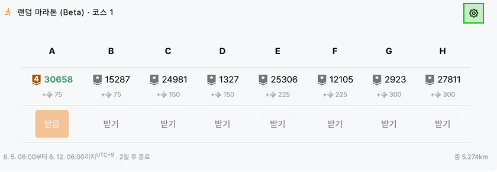
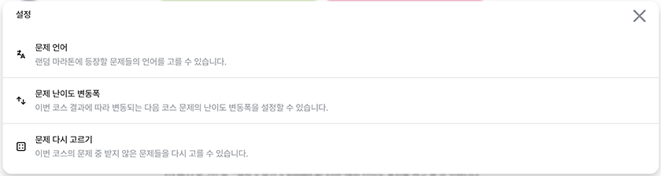

안녕하세요! 우리 모두가 만들어가는 알고리즘 문제해결 학습의 이정표 solved.ac입니다.
2024년 6월 26일 랜덤 마라톤 개선사항에 대해 소개드립니다.
랜덤 마라톤은 이전 코스의 성과를 기준으로 다음 코스의 전체적인 난이도를 결정합니다. 이전에는 지난 코스에서 해결한 문제 난이도에 따라 소폭 변동했으나, 코스 4부터는 코스의 전체적인 문제 해결 상태에 따라 이전보다 비교적 큰 폭으로 변화하도록 바뀌었습니다.
솔브드는 변동폭을 계속 지켜보면서 공식을 계속 조정해 나갈 예정이며, 충분히 안정적인 결과를 얻었다고 판단할 수 있을 때 되면 공식을 공개할 예정입니다.


랜덤 마라톤에서 문제 난이도 변동폭을 설정할 수 있도록 개선되었습니다. 변동폭을 높게 설정하면 다음 코스에 추천되는 문제들의 난이도가 크게 변동하게 되며, 변동폭을 낮게 설정하면 변동폭이 작아집니다.
실버 이상의 문제를 추천받고 있다면, 일반적인 분포에서 모든 문제를 해결했을 때를 기준으로, 각 옵션 별 변동폭은 '보통' 옵션을 배로 하였을 때 대략 아래와 같습니다.
| 작게 | (기존) | 보통 | 크게 |
|---|---|---|---|
| 배 | 배 | 배 | 배 |
별조각을 소모하여 랜덤 마라톤에서 추천받은 문제들을 다시 고를 수 있도록 개선되었습니다. [받기]를 클릭하지 않은 모든 문제를 다시 고를 수 있습니다.
코스 당 사용 횟수에는 제한이 없지만, 사용 횟수에 따라 별조각 소모량이 증가합니다. 구체적으로는 아래 공식을 따릅니다.